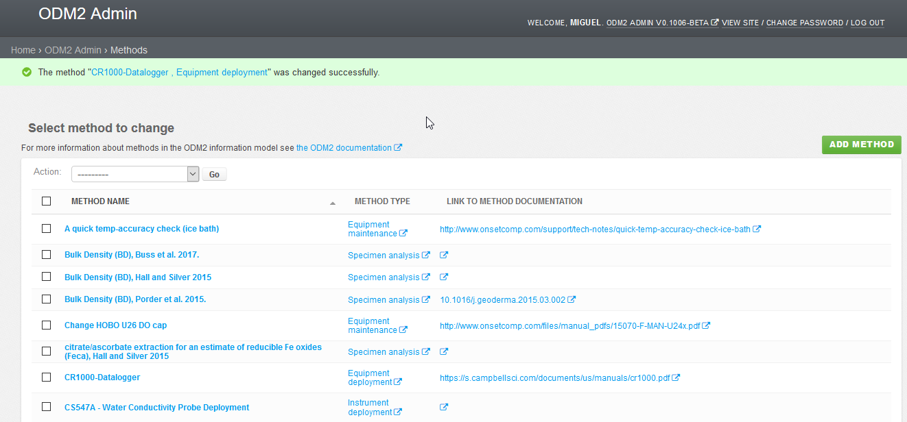

ODM2 Admin Site Management¶
One of the principal ways ODM2 improves on the original ODM information model is in accounting for a field sites needs for managing field sites. In ODM2 Admin users can track instrument deployments, equipment maintenance, sample collection and methods used for these tasks. Users can also track who performed the task, called actions in ODM2, along with field or lab notes from the performance of the task.
Record an Action¶
While logged into the ODM2 Admin demo, click the record an action shortcut, then select add a new method.
Here we will see a list of methods for our site. Along with the method name, and method type is a link to documentation. This link might be to a web page, dropbox, box or other hosted file describing the method. Types of methods listed here include equipment maintenance, specimen analysis, and Instrument deployment. Let’s look at the first method “A quick temp-accuracy check (ice bath)”. We can see the documentation link will take us to webpage from an equipment manufacturer onset. The Method Type link will take us to the ODM2 controlled vocabulary page for equipment maintenance. Click on the method name, this will show us the details about this method.
Here we have a method description, and at the bottom actions. The actions listed here used this method, we can also add a new action.